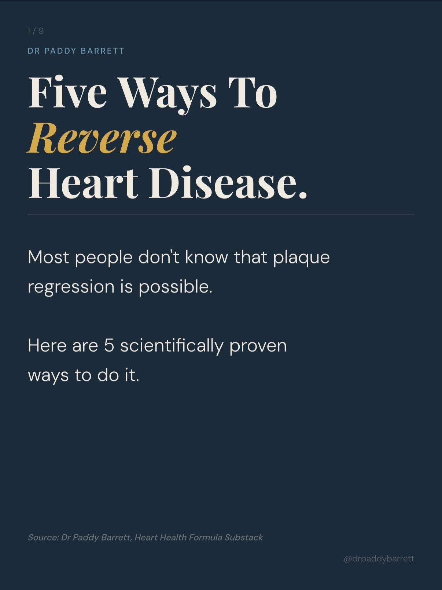
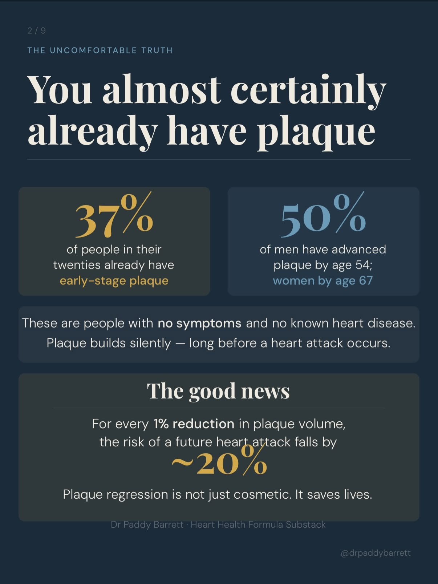
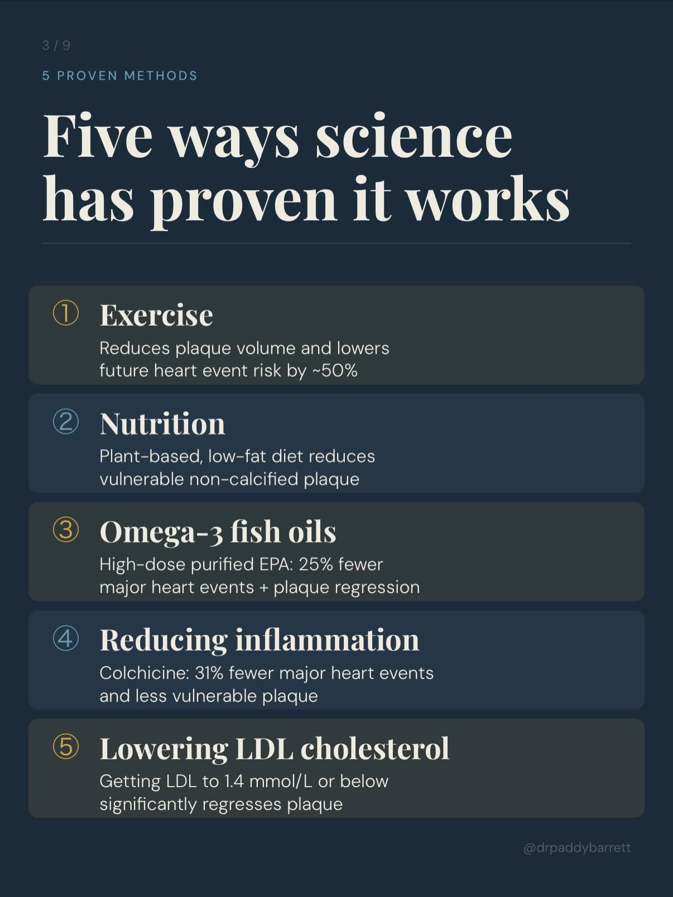
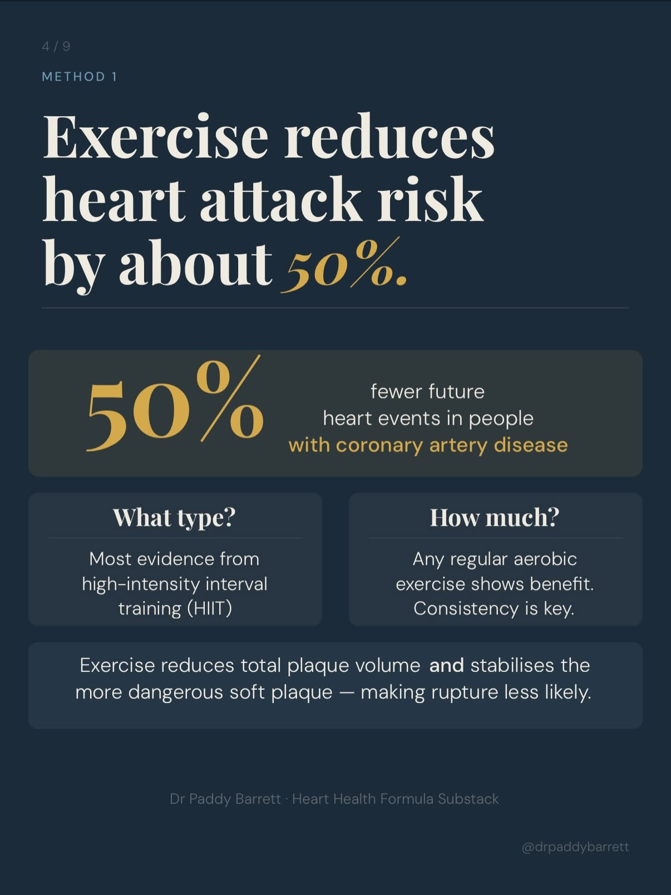
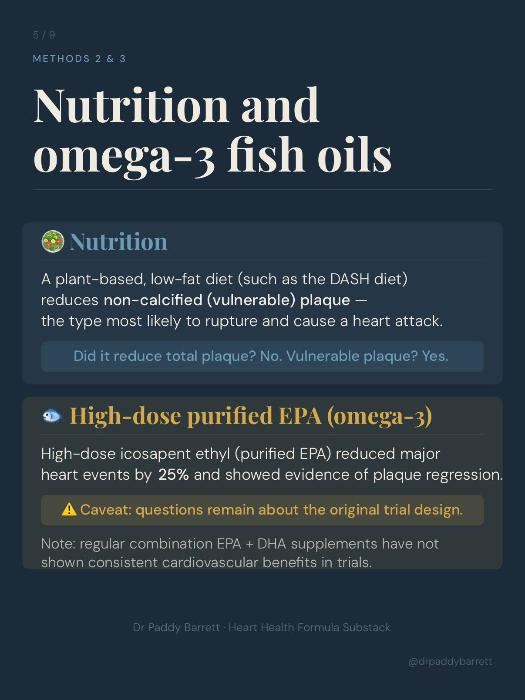

Five interventions that have been proven in randomized trials to REVERSE plaque.
(One correction on the post: The DASH diet he is referencing is not “low fat”. It is only low in saturated fat, not unsaturated fat. The Disco-CT randomized trial showing plaque reversal with a DASH diet was 30% fat: ↪ DISCO-CT: DASH diet plus statins reversed soft plaque by about 40 mm3 in a year. This diet was high in unsaturated fats like olive oil, other vegetable oils, nuts, seeds, avocado, fatty fish, etc.)
#reverseHD #statinreverseHD
Most people don’t know that plaque in the coronary arteries can actually be reversed. Not just slowed — reversed. Coronary artery disease is almost universal by middle age. Studies using intravascular imaging found that 37% of people in their twenties already have early-stage plaque, and 50% of men have advanced plaque by age 54. The question isn’t whether you have it. It’s what you do about it. The good news is that for every 1% reduction in plaque volume, the risk of a future heart attack falls by about 20%. Small changes compound into meaningful protection. There are five interventions with imaging-confirmed evidence of plaque regression. Exercise — particularly high-intensity aerobic training — reduces plaque volume and cuts the risk of future heart events by around 50% in people with coronary artery disease. Diet — specifically a plant-based, low-fat approach like the DASH diet — doesn’t reduce total plaque but does reduce the non-calcified, vulnerable plaque most likely to rupture. High-dose purified EPA omega-3 reduced major heart events by 25% and showed plaque regression in imaging studies, though questions remain about the original trial design. Colchicine, an old anti-inflammatory drug, reduced major heart events by 31% and reduced vulnerable plaque on imaging. And lowering LDL cholesterol to 1.4 mmol/L or below — using whatever therapy gets you there — has the strongest and most consistent evidence for plaque regression. The lower you go, the greater the benefit. None of these work in isolation. The goal is to stack all five, get every risk factor under control, and set the odds as far in your favour as possible. For weekly evidence-based insights on heart health, put the word NEWSLETTER in the comments and we’ll send you all the details.




